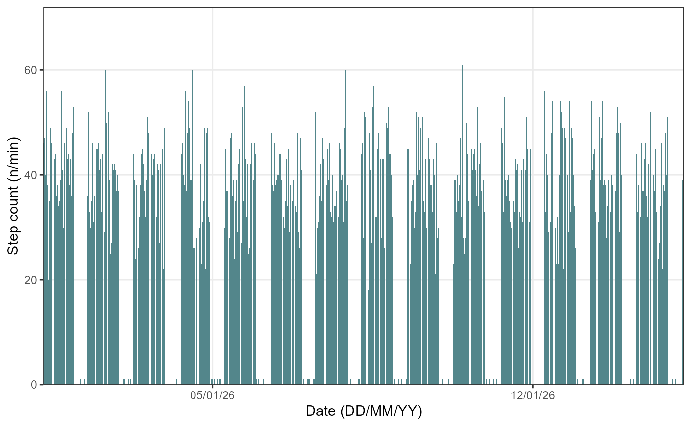

1. Introduction
The hypometrics package was built to handle physical
activity and sleep data generated by the FitBit Charge 4. Future work
will consist of augmenting the package’s adaptability in order to read
in data from different Fitbit devices or other activity and sleep
trackers (e.g. Garmin).
This article describes the step count and heart rate specific
functions that were created as part of the hypometrics
package.
Setup
To be able to use the step count and heart rate functions, firstly
install and load hypometrics.
#Install
install.packages("remotes")
remotes::install_github("leicester-cdag/hypometrics")
#Load package
library(hypometrics)Simulated data
Throughout this tutorial, the examples presented will be based on the
raw_step
and raw_hr
datasets.
- A preview of the
raw_stepdataframe is shown below:
utils::head(raw_step)
#> id step_timestamp count
#> 1 P01 2026-01-01 07:17:00 35
#> 2 P01 2026-01-01 07:18:00 38
#> 3 P01 2026-01-01 07:19:00 52
#> 4 P01 2026-01-01 07:20:00 44
#> 5 P01 2026-01-01 07:21:00 17
#> 6 P01 2026-01-01 07:22:00 46- A preview of the
raw_hrdataframe is shown below:
utils::head(raw_hr)
#> id hr_timestamp heart_rate
#> 1 P01 2026-01-01 07:17:00 63
#> 2 P01 2026-01-01 07:18:00 65
#> 3 P01 2026-01-01 07:19:00 72
#> 4 P01 2026-01-01 07:20:00 68
#> 5 P01 2026-01-01 07:21:00 55
#> 6 P01 2026-01-01 07:22:00 692. Reading activity data
The function activityRead() allows the user to read and
combine raw activity files downloaded directly from their Fitbit
account. If the downloaded folder is zipped, there is the option to
unzip the folder by setting the Unzip argument to TRUE.
This will create a new folder in the selected Folder Path
called Unzipped Fitbit. The Fitbit file type to read must
be specified using the FileType argument, either json or
csv. As the individual files do not contain personal identifiers, it
might be useful to add an ID column across the files to easily identify
participants. It is possible to do this using the StudyID
argument of the function.
Syntax examples are shown below:
hypometrics::activityRead(Unzip = F,
FolderPath = "C:/Users",
FileType = "json",
FilePattern = "steps-",
StudyID = "P02")
hypometrics::activityRead(Unzip = F,
FolderPath = "C:/Users",
FileType = "csv",
FilePattern = "active zone minutes",
StudyID = "P01")3. Visualising activity data
It may be useful to plot activity data to visually inspect step count
and heart rate over time. The activityVisualise() function
allows you to do this at three different levels of granularity.
Overall
Using the default function parameters, you will obtain an overview of
activity data for the entire study period for a selected participant.
Data type must be specified using the DataType argument and
can either be stepcount or heartrate.
To visualise step count data, the following syntax is used:
hypometrics::activityVisualise(DataFrame = raw_step,
DataType = "stepcount",
StudyID = "P01")
To visualise heart rate data, the following syntax is used:
hypometrics::activityVisualise(DataFrame = raw_hr,
DataType = "heartrate",
StudyID = "P01")Week by week
It is also possible to view activity data on a weekly basis by
specifying a breakdown by week using the TimeBreak argument
of the function and which week is of interest using the
PageNumber argument.
To visualise step count data, the following syntax can be used:
hypometrics::activityVisualise(DataFrame = raw_step,
DataType = "stepcount",
TimeBreak = "week",
PageNumber = 1,
StudyID = "P01")To visualise heart rate data, the following syntax can be used:
hypometrics::activityVisualise(DataFrame = raw_hr,
DataType = "heartrate",
TimeBreak = "week",
PageNumber = 1,
StudyID = "P01")The number at the top of the figure indicates the week selected for visualisation. Please note the function will return an error if the picked PageNumber (i.e. here, week number) is out of the data range (e.g. PageNumber = 5 when there are only 4 weeks of data).
Day by day
Lastly, for further granularity, there is an option to visualise activity data for specific days using the same logic as for the weekly data.
To visualise step count data, the following syntax can be used:
hypometrics::activityVisualise(DataFrame = raw_step,
DataType = "stepcount",
TimeBreak = "day",
PageNumber = 5,
StudyID = "P02")To visualise heart rate data, the following syntax can be used:
hypometrics::activityVisualise(DataFrame = raw_hr,
DataType = "heartrate",
TimeBreak = "day",
PageNumber = 10,
StudyID = "P01")The number at the top of the figure indicates the day selected for visualisation. Please note the function will return an error if the picked PageNumber (i.e. here, day number) is out of the data range (e.g. PageNumber = 15 when there are only 14 days of data).